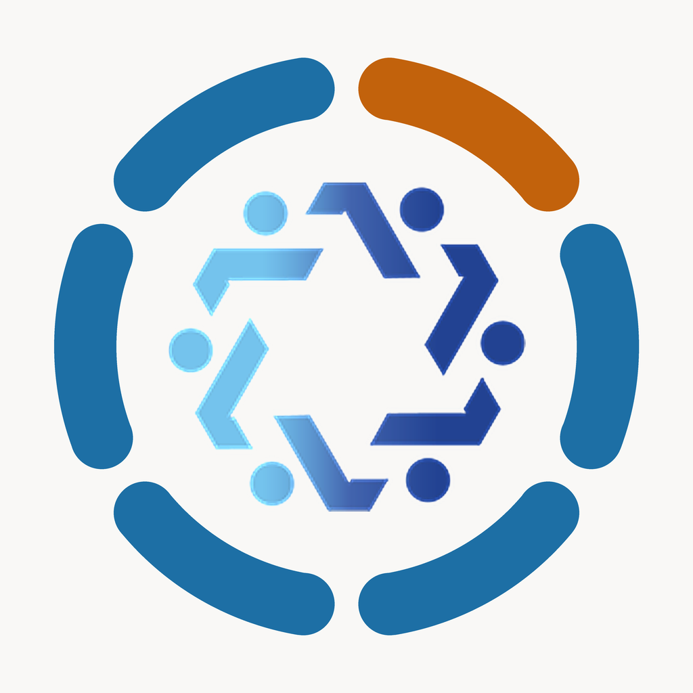
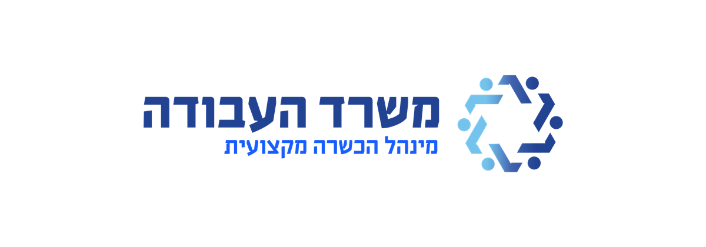

שגרירי חדשנות טכנולוגית
סביבת הלמידה

רגע, טוענים את הסביבה
אם זה לוקח יותר מכמה שניות — כדאי לרענן את הדף.
נסו שוב
שגרירי חדשנות טכנולוגית · משרד העבודה, מינהל הכשרה מקצועית
נבנה על ידי
impactos · impact-os.app